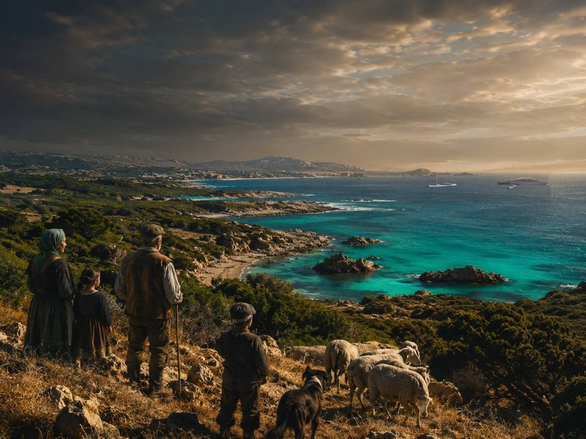
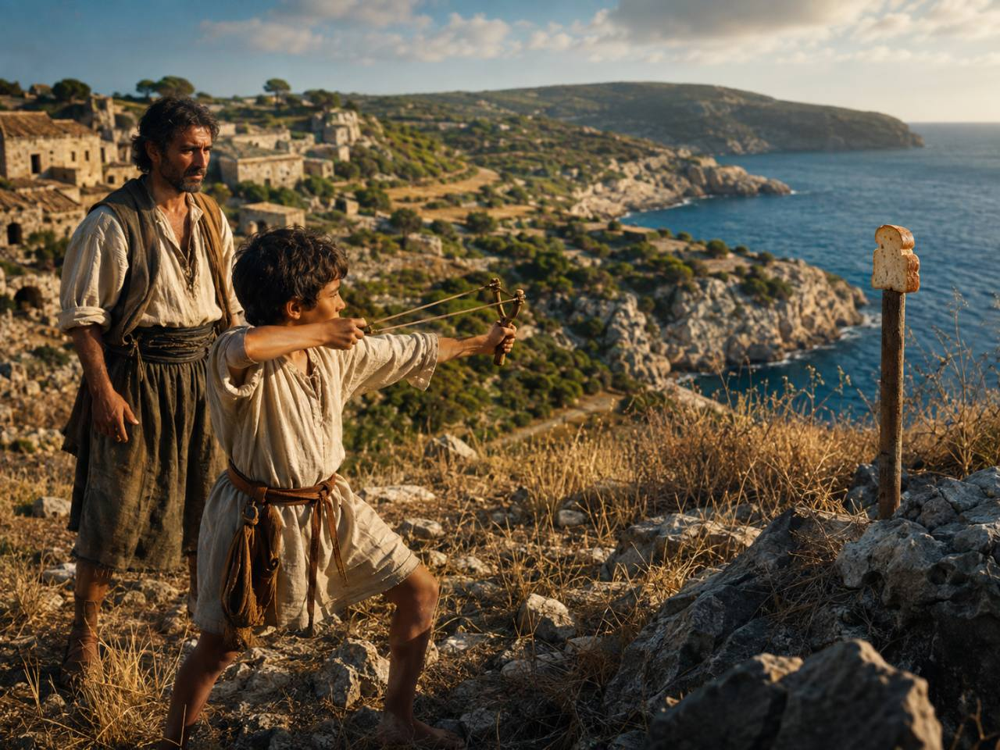
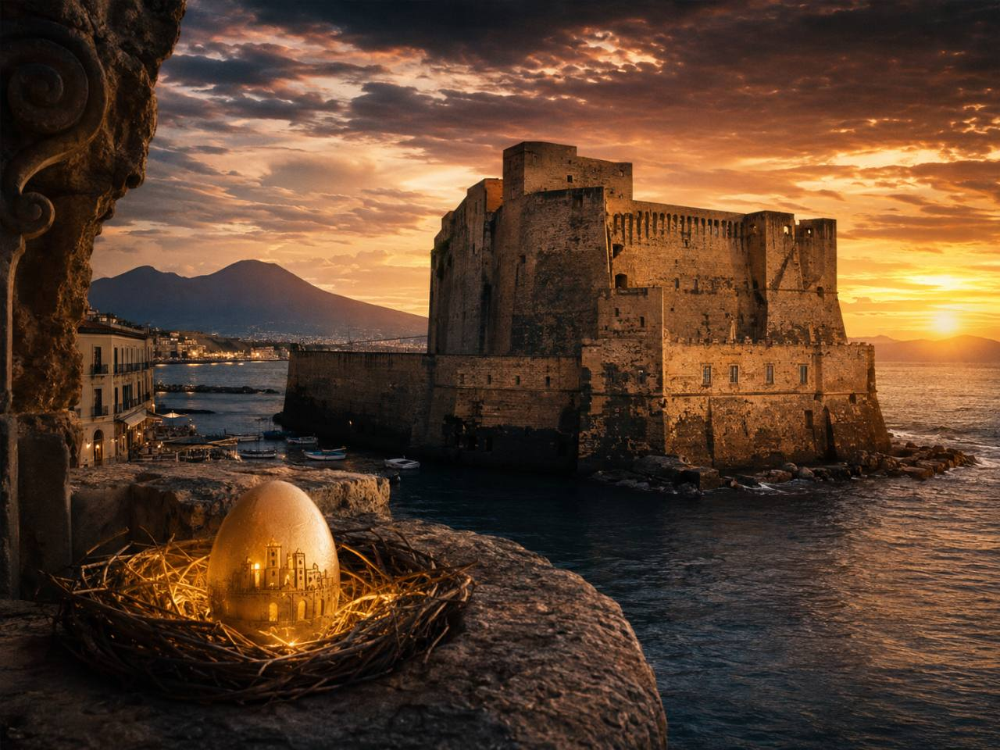
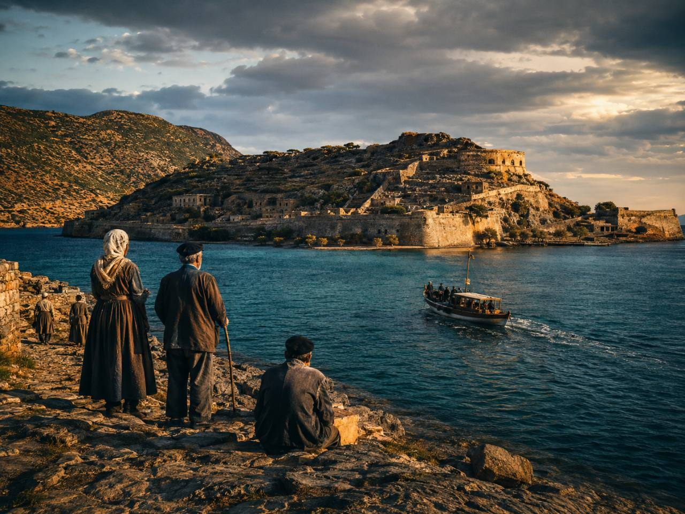
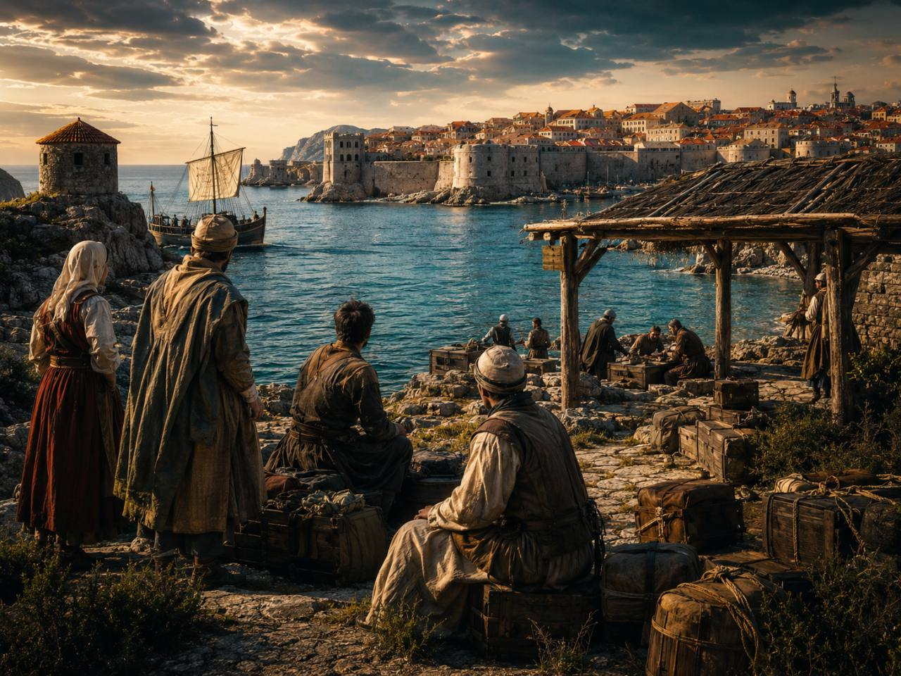
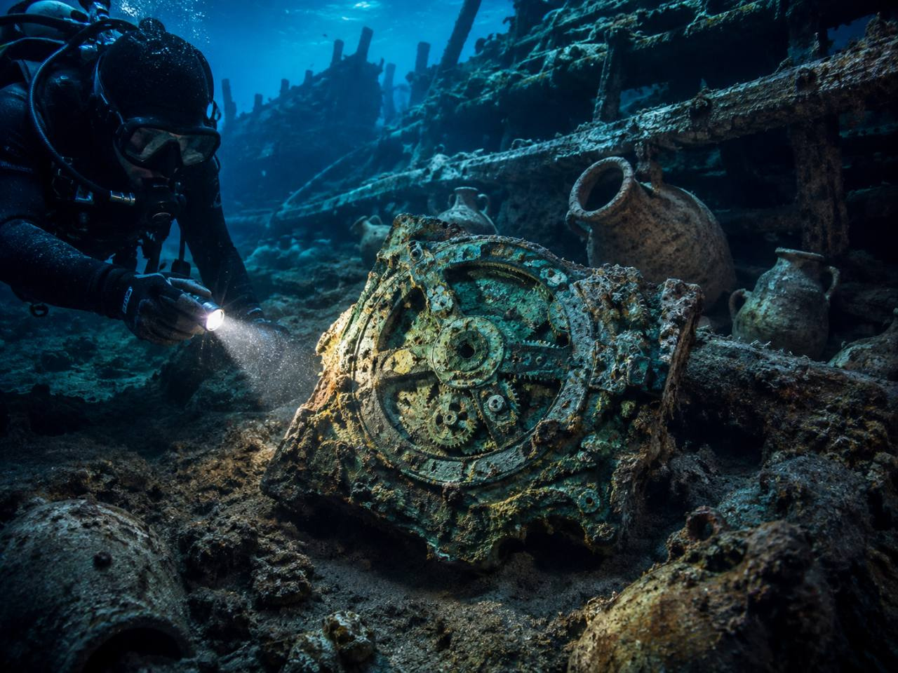
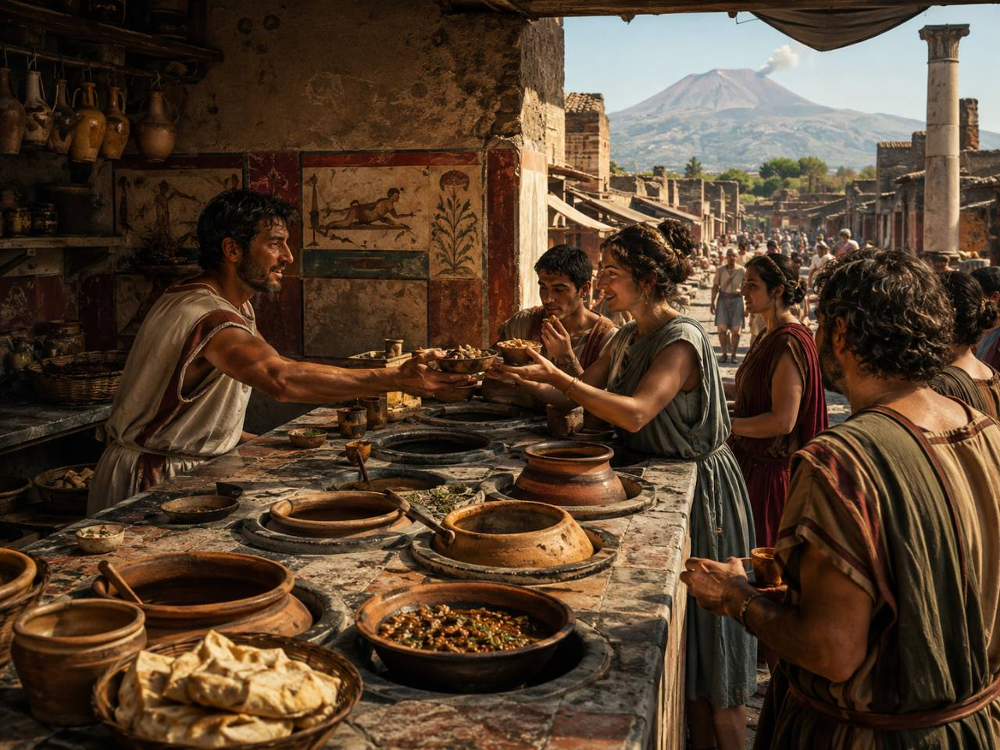
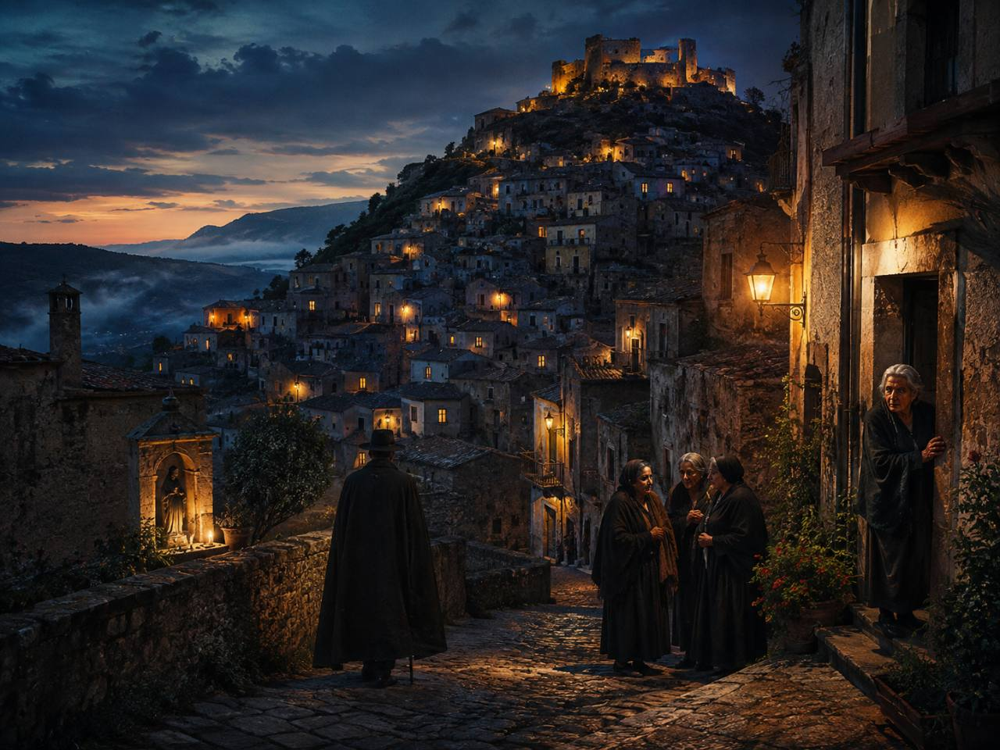

Predstavte si, že pri delení rodinného majetku dostanete tú najhoršiu časť: kamenistú pôdu pri mori, na ktorej sa nedá dobre pásť dobytok ani pestovať úroda. Hodnotnejšie pozemky vo vnútrozemí pripadnú vašim bratom.
O niekoľko desaťročí sa však práve vaše údajne bezcenné dedičstvo stane súčasťou Costa Smeraldy – jedného z najznámejších luxusných pobreží sveta.
A to je iba začiatok.
Na Malorke vraj deti nedostali jesť, kým prakom nezasiahli chlieb. Neapol má podľa legendy chrániť vajce ukryté v hrade. Dubrovník zaviedol predchodcu karantény už v roku 1377 a z vraku pri malom gréckom ostrove vytiahli zariadenie také zložité, že ho dnes označujeme za najstarší zachovaný analógový počítač.
Nie všetky nasledujúce príbehy majú rovnakú mieru istoty. Niektoré sú dobre doložené historické fakty, iné miestne tradície alebo rozprávania antických autorov a ďalšie sú otvorene označené ako legendy.
1. Sardínia sa mora bála. Bezcenné pobrežie dnes pozná celý svet ako Costa Smeralda
Doložená miestna tradícia a skutočný historický obrat

Veta „Sardínia sa bála mora“ je zámerne provokatívna skratka. Neznamená, že by sa všetci Sardínčania báli vody alebo odmietali rybolov. Vzťah mnohých starších vnútrozemských komunít k moru bol však úplne iný, než by sme na stredomorskom ostrove očakávali.
Život sa sústreďoval na pôdu, ovce, pastviny a dediny vo vnútrozemí. Pobrežné roviny boli miestami spojené s maláriou, močarinami, vetrom a v minulosti aj s útokmi prichádzajúcimi od mora. Univerzita v Cagliari dodnes skúma historickú otázku, či Sardínia skutočne žila „chrbtom obrátená k moru“, alebo je tento obraz zjednodušený.
Konkrétne ľudské príbehy však ukazujú, že more mohlo byť vzdialeným svetom aj pre ľudí, ktorí od neho bývali iba niekoľko desiatok kilometrov. Sardínsky spisovateľ Marcello Fois opísal svojho otca z Barbagie, ktorý uvidel more prvýkrát až ako mladý dospelý počas práce na likvidácii malárie. Doma o ňom rozprával, akoby navštívil inú krajinu. Džezový hudobník Paolo Fresu z Berchiddy zas napísal, že sa nikdy nenaučil plávať, hoci pláže ležali približne 30 kilometrov od jeho rodnej obce.
Najväčší paradox sa však odohral v Gallure na severovýchode Sardínie.
Pozemky pri mori boli z pohľadu tradičného hospodárstva často málo užitočné. Boli skalnaté, vystavené slanému vetru a nevhodné na pastvu. Oficiálna história Costa Smeraldy uvádza, že takéto pobrežné parcely rodiny prenechávali dcéram, pretože sa považovali za neproduktívne. Tradícia opisovaná agentúrou ANSA je ešte konkrétnejšia: hodnotnejšiu pôdu ďalej od pobrežia mali dostávať synovia, kým dcéram pripadali menej cenené pozemky pri mori. Nešlo o zákon platný na celej Sardínii, ale o miestnu rodinnú prax spájanú s Gallurou.
Potom prišli 60. roky 20. storočia. Dňa 14. marca 1962 vzniklo Consorzio Costa Smeralda. Aga Khan Karim a skupina investorov začali budovať cesty, prístav, hotely a nové turistické centrum Porto Cervo. Pôda, ktorú ešte nedávno nikto nepovažoval za zvlášť hodnotnú, začala prudko získavať na cene.
To, čo bolo kedysi nevýhodným dedičstvom pre dcéry, sa premenilo na symbol svetového luxusu.
2. Deti na Malorke vraj nedostali chlieb, kým ho netrafili prakom
Antické rozprávanie s reálnym historickým základom

Baleárski prakovníci patrili medzi najobávanejších bojovníkov starovekého Stredomoria. Pochádzali najmä z Malorky a Menorky a ich schopnosti využívali kartáginské aj rímske armády.
Ich zbraň pôsobila jednoducho: kožený alebo spletený pás, do ktorého sa vložil kameň či kovový projektil. V rukách skúseného bojovníka však dokázal prak vrhať strely s takou silou, že podľa antického autora Diodora ničili štíty, prilby a brnenie.
Ako sa mali ostrovania naučiť takej presnosti? Diodoros Sicílsky opísal, že matky pripevnili kus chleba na kôl a dieťa ho nesmelo zjesť, kým ho prakom nezasiahlo. Veľmi podobnú verziu zaznamenal aj geograf Strabón: baleárske deti vraj nedostali chlieb, pokiaľ si ho „nezískali prakom“.
Nevieme dokázať, či takto každé ráno trénovali všetky deti na ostrovoch. Antickí autori radi zdôrazňovali nezvyčajné zvyky cudzích národov a príbeh mohol byť zveličený.
Isté však je, že baleárski prakovníci skutočne existovali a ich presnosť bola preslávená ďaleko za hranicami ostrovov. Legenda o chlebe tak pravdepodobne vznikla ako vysvetlenie schopnosti, ktorá musela na bojisku pôsobiť takmer nadľudsky.
3. Neapol má podľa legendy chrániť vajce ukryté v hrade
Neapolská legenda

Na malom ostrovčeku Megaride stojí najstarší neapolský hrad Castel dell’Ovo – doslova Vaječný hrad. Názov však údajne nesúvisí s jeho tvarom.
Podľa stredovekej legendy básnik Vergílius, ktorého obyvatelia Neapola považovali aj za mocného čarodejníka, ukryl v hrade magické vajce. Malo byť vložené do sklenenej nádoby, tá do kovovej klietky a celé tajomstvo ukryté na mieste, ktoré nikto nepoznal.
Kým zostane vajce neporušené, v bezpečí má byť hrad aj celý Neapol. Ak by sa rozbilo, mesto by postihla katastrofa. Túto legendu uvádza aj oficiálny materiál mesta Neapol.
Rozprávanie pokračuje udalosťou z roku 1370, keď hrad vážne poškodila morská vlna a zrútili sa jeho veže. Medzi ľuďmi sa údajne rozšírila panika, že ochranné vajce bolo zničené. Kráľovná Jana I. preto mala obyvateľov upokojiť prísľubom, že vajce nahradí novým a ešte mocnejším. Aj túto epizódu treba chápať ako súčasť legendy, nie potvrdený historický záznam o magickom predmete.
Vajce sa nikdy nenašlo. Možno je stále ukryté pod hradom. Alebo tam, samozrejme, nikdy nebolo. V Neapole však nie je vždy jednoduché určiť, kde sa končí história a začína legenda.
4. Na malý ostrov pri Kréte posielali ľudí s leprou
Potvrdená história

Spinalonga dnes na prvý pohľad vyzerá ako romantický ostrov s mohutnou benátskou pevnosťou. Jeho novodobá história je však oveľa temnejšia.
V roku 1903 krétska vláda určila ostrov za miesto, kam mali byť premiestňovaní ľudia trpiaci leprou, dnes známou aj ako Hansenova choroba. Kolónia fungovala až do roku 1957.
Ľudí oddeľovali od rodín a spoločnosti pre chorobu, ktorej sa okolie mimoriadne bálo. Príchod na ostrov musel pre mnohých znamenať pocit, že boli vymazaní zo sveta živých.
Spinalonga však nebola iba miestom utrpenia. Obyvatelia si postupne vytvorili vlastnú komunitu. Na ostrove fungovali obytné budovy, obchody, nemocnica a spoločenský život. Grécke ministerstvo kultúry dnes zdôrazňuje, že pacienti nevytvorili iba izolovanú kolóniu, ale spoločnosť solidarity. Ich príbeh tak nie je len príbehom choroby, ale aj ľudskej dôstojnosti a snahy žiť normálne v nenormálnych podmienkach.
Z miesta, ktorému sa ľudia vyhýbali, sa stala jedna z najnavštevovanejších historických lokalít Kréty.
5. Dubrovník zaviedol karanténu, aby ochránil ľudí aj obchod
Potvrdená história

Stredoveký Dubrovník, vtedy známy ako Ragusa, žil z obchodu. Do prístavu prichádzali lode, ľudia a tovar z rôznych častí Stredomoria. Spolu s nimi však mohol prísť aj mor.
Úplné zatvorenie prístavu by poškodilo hospodárstvo. Nechať všetkých voľne vstúpiť do mesta zas predstavovalo smrteľné riziko. Dubrovníčania preto vymysleli riešenie niekde uprostred.
Dňa 27. júla 1377 nariadila mestská Veľká rada, že ľudia prichádzajúci z oblastí postihnutých morom musia pred vstupom do mesta stráviť 30 dní v izolácii. Čakali na blízkych ostrovoch a sledovalo sa, či sa u nich prejavia príznaky choroby. Opatrenie sa nazývalo trentina, podľa talianskeho slova pre tridsať.
Neskôr sa izolačné obdobie predĺžilo na 40 dní. Z talianskeho quaranta – štyridsať – vzniklo slovo karanténa.
Samotná myšlienka oddeľovať chorých ľudí je oveľa staršia. Dubrovnícke opatrenie však patrí medzi prvé známe prípady karantény upravenej ako systematické verejné pravidlo, ktoré malo zároveň chrániť zdravie a umožniť pokračovanie obchodu.
Mesto teda nevymyslelo iba spôsob, ako ľudí zavrieť. Vymyslelo spôsob, ako zostať otvorené bez toho, aby sa úplne vydalo napospas epidémii.
6. Z mora vytiahli zariadenie, ktoré predbehlo svoju dobu o stáročia
Archeologický fakt

V roku 1900 objavili potápači pri gréckom ostrove Antikythéra vrak starovekej lode. Medzi sochami, keramikou a ďalšími predmetmi sa nachádzali aj nenápadné skorodované kusy bronzu.
Až neskôr vedci pochopili, že v nich zostali zachované ozubené kolesá a zvyšky mimoriadne zložitého mechanizmu.
Mechanizmus z Antikythéry vznikol približne medzi rokmi 150 a 100 pred naším letopočtom. Dokázal zobrazovať astronomické a kalendárne cykly, pohyb Slnka a Mesiaca a pomáhal predpovedať zatmenia. Grécke Národné archeologické múzeum ho označuje za najstarší zachovaný prenosný astronomický a kalendárny výpočtový prístroj.
Preto sa o ňom často hovorí ako o najstaršom analógovom počítači na svete.
Najväčšou záhadou nie je iba to, ako fungoval, ale aj to, prečo sa z nasledujúcich stáročí nezachovalo nič porovnateľné. Technologická úroveň jeho ozubených prevodov sa v známych európskych mechanizmoch znovu objavila až oveľa neskôr.
More tak neuchovalo iba vrak lode. Uchovalo dôkaz, že dejiny techniky nemusia vždy postupovať priamo dopredu.
7. Pompeje mali rýchle občerstvenie dávno pred hamburgermi
Archeologický fakt

Obyvatelia Pompejí nemuseli každý deň variť doma. Po uliciach mesta fungovali prevádzky nazývané thermopolia, ktoré v mnohom pripomínali dnešné bary, bufety alebo rýchle občerstvenie.
Mali murovaný pult obrátený do ulice. V ňom boli zapustené veľké nádoby, v ktorých sa uchovávali jedlá a nápoje. Archeologický park Pompeje ich priamo prirovnáva k starovekým snack barom a uvádza, že najmä príslušníci nižších a stredných vrstiev často jedávali mimo domu.
Pri skúmaní Thermopolia v Regio V archeológovia našli zvyšky jedál, zvieracie kosti aj nádoby. Pult bol navyše zdobený maľbami zvierat a morskej bytosti jazdiacej na morskom koni.
Predstava rýchleho jedla teda nevznikla s modernými reťazcami. Už pred takmer dvetisíc rokmi sa ľudia zastavili cestou za prácou, objednali si niečo pri pulte, najedli sa a pokračovali ďalej. Chýbali im iba papierové poháre, plastové tácky a aplikácia na rozvoz.
8. Talianska dedina, ktorej meno sa ľudia báli vysloviť
Folklór a miestna legenda

Colobraro je malá obec v Basilicate. Známa sa však stala ako dedina, ktorej meno údajne prinášalo nešťastie.
Ľudia z okolitých oblastí ju vraj radšej nazývali iba quel paese – „tá dedina“. Oficiálny turistický portál Basilicaty priznáva, že Colobraro bolo považované za nevysloviteľné miesto spojené so smolou a zlým okom.
Jedna z najznámejších historiek pochádza z obdobia pred druhou svetovou vojnou. Istý miestny významný muž mal počas sporu vyhlásiť, že ak nehovorí pravdu, nech spadne luster. Luster údajne naozaj spadol.
Príbeh sa nikdy oficiálne nepotvrdil, no povesť dediny bola na svete. Ďalšie rozprávania ju spájali so ženami ovládajúcimi mágiu, urieknutiami a sériami nešťastných náhod.
Obyvatelia Colobrara sa však rozhodli, že pred legendou nebudú utekať. Premenili ju na svoju výhodu. V dedine vzniklo letné divadelné podujatie Sogno di una notte a… quel paese, počas ktorého návštevníci dostávajú ochranné amulety a prechádzajú uličkami plnými príbehov o mágii, poverách a miestnom folklóre.
Dedina, ktorej meno sa nemalo vyslovovať, sa tak preslávila práve vďaka svojmu menu.
Stredomorie je zvláštnejšie, než vyzerá z dovolenkového katalógu
Tyrkysová voda, pláže a historické mestá sú iba prvou vrstvou Stredomoria.
Pod ňou sa ukrýva svet, v ktorom rodičia údajne nútili deti zostreľovať si obed, obyvatelia ostrova dokázali žiť celý život bez plávania, chorí si vo vyhnanstve vybudovali vlastnú spoločnosť a stredoveké obchodné mesto vytvorilo opatrenie, ktoré používame dodnes.
Niektoré príbehy sú dokonale zdokumentované. Iné prežívajú iba v knihách, miestnej pamäti alebo legendách. Práve to ich však robí zaujímavými.
Stredomorie totiž netvoria iba miesta, ktoré možno vidieť. Tvoria ho aj príbehy, ktorým sa najprv nechce veriť.
Ktorý z nich znie najneuveriteľnejšie – sardínske dedičstvo dcér, chlieb zostreľovaný prakom alebo magické vajce ukryté pod Neapolom?
Poznámka redakcie: Článok vznikol na základe AI prieskumu historických, archeologických, múzejných a regionálnych zdrojov. Nejde o osobnú cestovateľskú skúsenosť autora. Miestne tradície, antické rozprávania a legendy sú v texte výslovne označené.